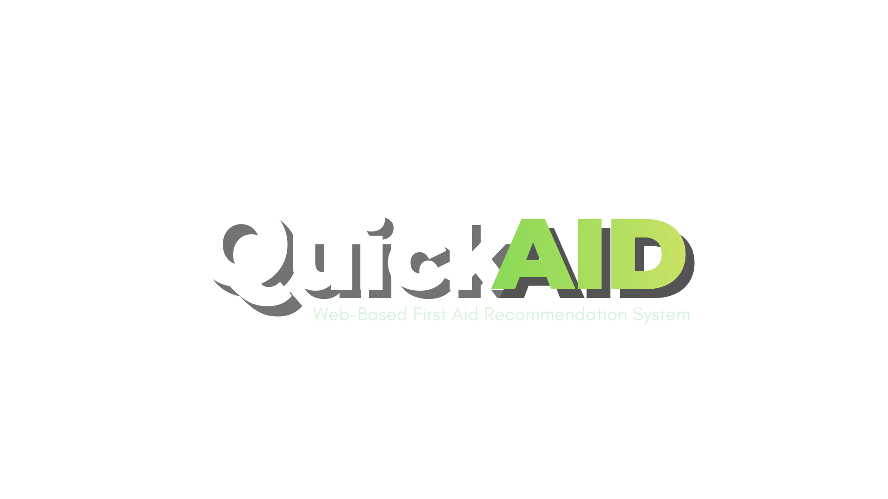

Minor Wound Evaluation
Recommendation Panel
QuickAid is for educational purposes only and does not replace
professional medical advice.

QuickAid is a prototype decision support website for minor wound care. Instead of searching through many pages, the system organizes first aid guidance into one guided interface.
Users identify visible warning signs such as redness, swelling, discharge, or pain.
QuickAid evaluates the wound condition and determines the level of priority for treatment.
After the website loads once online, the system can still be accessed offline.
QuickAid is an educational prototype designed to demonstrate how web technology can organize first aid knowledge and assist users in responding to minor wounds.
The system's guidance is based on general first aid concepts and educational health materials discussing wound cleaning, burn treatment, and minor injury care.